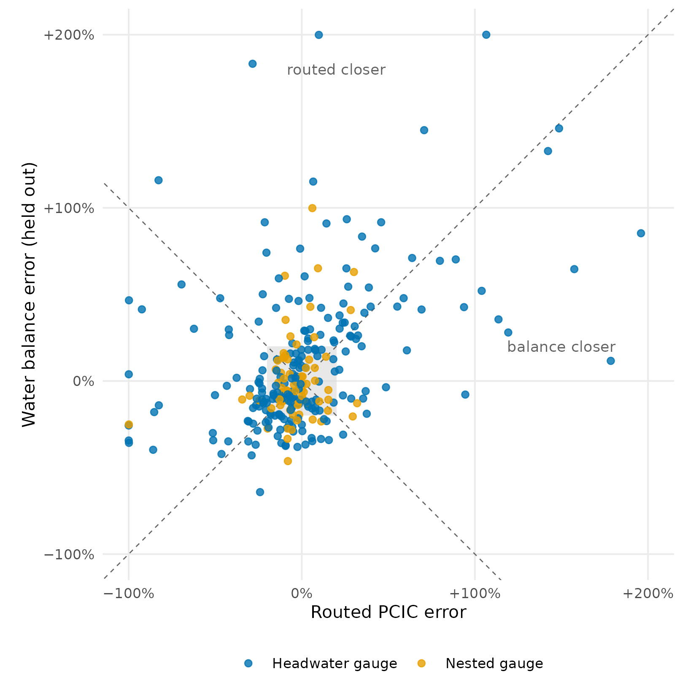
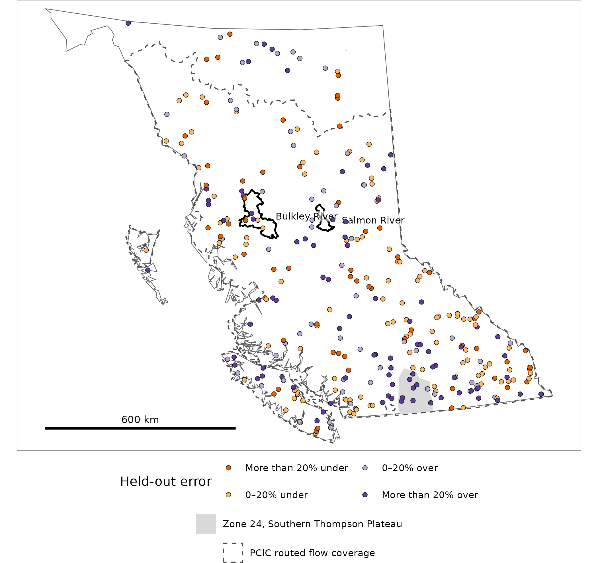
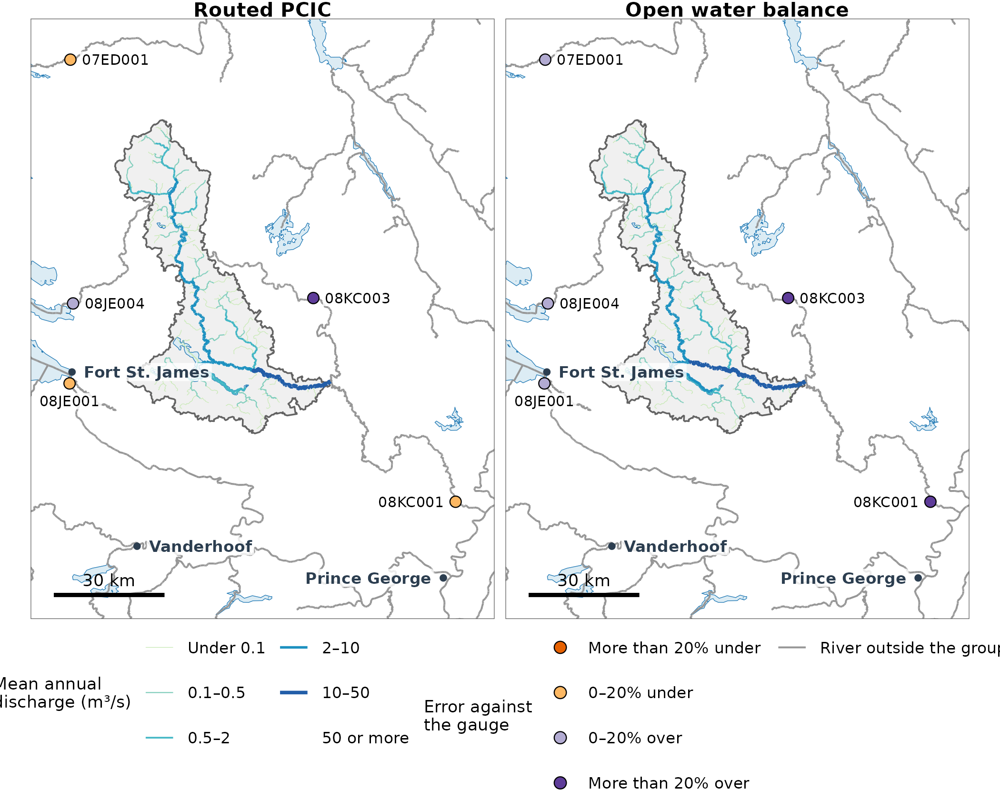

wet publishes the mean flow of British Columbia’s Freshwater Atlas
stream segments, in cubic metres per second, for each calendar month and
for the year, from two sources. It is public at
s3://fresh-bc/discharge/fwa/v1/, and its manifest, https://fresh-bc.s3.us-west-2.amazonaws.com/discharge/fwa/v1/manifest.json,
lists every part with its rows, size and md5. The bucket allows no
listing, so a reader starts from the manifest. The current build has 67
parquet parts, 1.80 GB, built on 13 October 2026 at wet commit
7c62b9e.
-
segment_monthly: one row per Freshwater Atlas segment, month and source with a value, 102,790,688 rows. Month 0 is the annual mean and months 1–12 the calendar months. -
watershed_monthly: the same per fundamental watershed, the small polygon each segment drains, from the open water balance only (41,904,356 rows).
Each row comes from one source:
pcic_routed, PCIC’s routed flow over 1951–2012, or
wet_balance, wet’s open water balance over 1981–2010, and
3,374,133 segments have both. pick is TRUE on one of them,
the default: routed PCIC, unless its annual flow is under a fifth of the
balance’s on a segment that lies on its own watershed’s line, where the
balance is picked. Where only one source has a value, pick
takes it. Of the 4,532,843 segments with a value, 3,152,838 pick routed
PCIC and 1,380,005 the balance.
library(wet)
cat <- wet_catalog() # the manifest: one row per part, with its href
# into Postgres (discharge.fwa_v1_segment_monthly), then the default annual flow
conn <- DBI::dbConnect(RPostgres::Postgres(), dbname = "fwapg")
wet_db_load(conn, cat)
DBI::dbGetQuery(conn, "
select linear_feature_id, q_m3s as mad_m3s
from discharge.fwa_v1_segment_monthly
where scenario = 'historical' and month = 0 and pick")
# or straight from the parts: scenario, forcing and source are in the path,
# not the files, so read them with hive_partitioning
duck <- DBI::dbConnect(duckdb::duckdb())
DBI::dbExecute(duck, "LOAD httpfs")
segs <- cat$href[cat$dataset == "discharge/fwa/v1/segment_monthly"]
DBI::dbGetQuery(duck, sprintf("
SELECT source, linear_feature_id, q_m3s
FROM read_parquet([%s], hive_partitioning = true)
WHERE watershed_group_code = 'SALR' AND month = 0 AND pick",
paste0("'", segs, "'", collapse = ", ")))Besides flow (q_m3s) a row carries
runoff_mm, the same water as a depth over the area upstream
(NA for a routed row off its watershed’s own line, where the only area
is another stream’s), coverage, the share of that area the
balance’s inputs cover, and period, the years averaged.
Parts are split by top-level drainage and sorted by
watershed_group_code, so a read for one group opens a few
row groups.
How each source was made
Routed PCIC. The Pacific Climate Impacts Consortium runs the VIC-GL model of snow, glaciers, soil and runoff on a 0.0625° grid, driven by the PNWNAmet observed climate, and routes its runoff down rivers with the Raven model to outlets of its own network (hydromosaic). New Graph’s fork of fwapg places those outlets on Freshwater Atlas segments and spreads the flow between outlets by drainage area, giving the segments it reaches monthly means over 1951–2012. The annual value is the mean of the twelve. It covers the Fraser, Peace, Columbia and most of the coast, but not the Liard.
Open water balance. wet’s own estimate, after Chapman et al. (2018). Precipitation less actual evapotranspiration, from 1981–2010 normals on a 30″ grid, is averaged over each watershed’s upstream area, then adjusted per hydrologic zone against gauges in the Water Survey of Canada’s HYDAT archive. It covers almost all of BC, and its code and inputs are open. The published values come from the fit that uses every calibration gauge; the scores below hold each gauge out of the fit that predicts it.
How the numbers line up at the gauges
Both sources are scored against mean annual runoff measured at the 315 HYDAT gauges the water balance is calibrated on, over 1981–2010. Error is modelled minus observed runoff, as a percentage of observed. The balance is scored held out: wet holds out each Water Survey sub-sub-drainage in turn (the first four characters of a station number, such as 08EE), fits on the rest and predicts the gauges it held out, so a gauge’s neighbours on the same river cannot vouch for it. Routed PCIC has a value at 290 of the gauges; most of the other 25 are in the Liard.
| Routed PCIC, 290 gauges | Open water balance (held out), 290 gauges | Open water balance (held out), all 315 gauges | |
|---|---|---|---|
| Mean absolute error | 24.1% | 27.6% | 27.5% |
| Bias (mean error) | +0.2% | +9.0% | +8.5% |
| Middle half of errors | −14% to +10% | −15% to +24% | −16% to +24% |
| Within ±20% | 62% | 54% | 53% |

Error at each of the 290 calibration gauges both sources cover: routed PCIC’s across, the water balance’s (held out) up. The shaded square holds the gauges both put within ±20%. Between the dashed diagonals, the left and right wedges hold gauges where the balance is closer, the top and bottom wedges those where routed PCIC is. 1 gauge beyond +200% is drawn at the edge.
A nested gauge’s basin holds another gauge’s; a headwater gauge’s does not. Held out, the balance averages 18% error at nested gauges and 31% at headwater ones, and 20% on basins over 1,000 km² against 40% on those under 100 km². One of BC’s 29 hydrologic zones stands out: zone 24, the Southern Thompson Plateau, a semi-arid interior plateau, where its 9 gauges average 93%.

The 315 calibration gauges, filled by the water balance’s held-out error at each. Routed PCIC’s coverage is outlined; zone 24, the weakest, is shaded; the Salmon River, mapped below, is in black.
Salmon River: both sources side by side
The Salmon River is a headwater group of the Fraser (1,794 km²). Both
sources cover it, and they differ: the balance gives a median 1.23 times
routed PCIC’s flow per segment. pick takes routed PCIC on
all 2,180 of its segments with a value. The 5 gauges in and around the
group show how each compares with measured flow.
The balance runs high at all of them, by +2% to +26%. Routed PCIC is closer at 3, including 08KC001, the gauge that drains the whole group: −7% against the balance’s +26%. The balance is closer at the other 2, where routed PCIC is off by +31% and −12%.
| Gauge | Area (km²) | Observed (mm) | Water balance (held out) | Routed PCIC |
|---|---|---|---|---|
| 08KC001 Salmon River near Prince George | 4,227 | 205 | +26% | −7% |
| 08KC003 Muskeg River north of Joanne Lake | 297 | 224 | +24% | +31% |
| 08JE004 Tsilcoh River near the Mouth | 439 | 180 | +18% | +4% |
| 07ED001 Nation River near Fort St. James | 4,356 | 401 | +2% | −12% |
| 08JE001 Stuart River near Fort St. James | 14,235 | 285 | +3% | 0% |

Published mean annual discharge on 2,180 of the 2,181 Salmon River segments of order 3 or more, from routed PCIC (left) and the open water balance (right), with the gauges of the table filled by each source’s error. Rivers outside the group are grey.
Limits
-
Coverage. Routed PCIC has no value, or almost none,
in the Liard and in a few northern and border basins (the Yukon and
Alsek headwaters, the Hay, the Skagit), and on the outer coast’s islands
it reaches only some segments. There
picktakes the balance where the balance has a value. - Dry zones. In zone 24 and the other semi-arid interior zones, runoff is a small remainder of precipitation, so a small error in evapotranspiration is a large one in runoff.
-
The zone adjustment is a close call on headwater
basins. On headwater gauges it does not beat raw precipitation
less evapotranspiration, and it is kept by a recorded decision for what
it does on larger rivers (
research/water_balance_method.md, “Refit on HYDAT 2026-07-17”). Zones with too few gauges for their own adjustment get none. - Small streams. 84 of the 315 gauges drain less than 100 km², and there the balance averages 40% held-out error.
- Segments without a value. A segment with no watershed polygon in the Freshwater Atlas lookup gets a value from neither source, and a few thousand with one, mostly on the central coast, get none either. In the Salmon River, one segment of order 3 or more has none, of order 5, left off the map.
Validation
Every published flow is checked against what it was built from when
the product is built: routed months against fwapg’s table, routed annual
values against their twelve months, and the balance against the fit’s
output. Each segment row’s flow, runoff, coverage and pick
are also checked against the per-segment table it was cut from. The
counts compared and differing are in the build report, discharge_publish_20260717.txt.
This article reads its segment values from the published parts and is
not built unless each equals its source. wet’s own path through PCIC’s
gridded output reproduces fwapg’s earlier unrouted annual table on the
Salmon River to the five decimals fwapg stores, and the effect of
sampling grid cells by area rather than at each watershed’s centroid is
measured there too (research).
Cached inputs. This article runs on saved outputs.
Segment values were read on 13 October 2026 from the published build
7c62b9e (segment table 653fc13), 4,649 of them checked against their
sources with none differing, by
data-raw/segment_vignette_data.R at wet commit 7b83959.
Gauge scores are from province run 962a9cc2c4 (annual AET cfu, HYDAT
release 2026-07-17), and routed PCIC from fwapg at commit 341b078
(40524444 rows, 3377037 segments, 0 null flows, total 178035348.248310
m3/s), scored in data/checks/pcic_routed_compare_20260717.txt. Map
layers come from the Freshwater Atlas (fwapg), BC Geographic Names and
the BC Hydrologic Zones, by
data-raw/segment_vignette_map.R.